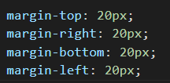
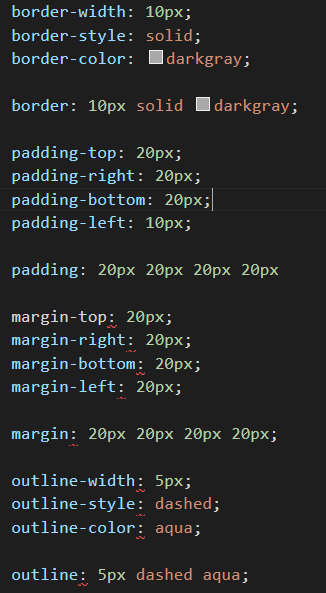

Configurando itens dentro de caixas
Para centralizarmos a margem de um conteúdo se for uma caixa, usamos a tag margin:auto;
- Outro ponto importante são as tag Margin, pois nelas conseguimos configurar espações e distâncias de elementos para o outro, assim como na tag padding, devemos usar o metódo do sentido do relógio para informamos os tamanhos das margin como no exmemplo abaixo.

- Podemos utilizar a tag Outline para configura a linha fora da borda, onde colocamos o tamanho, a configuração e a cor.No outline-width: 5px; (Tamanho), outline-style: dashed; (Estilo, neste caso pontilhado), e a cor outline-color: aqua;
- Podemos simplificar os Border, Padding, Margin e Outilne em apenas uma linha, chamamos essa simplificação de Shorthands, devemos seguir uma ordem, conforme no exemplo.
